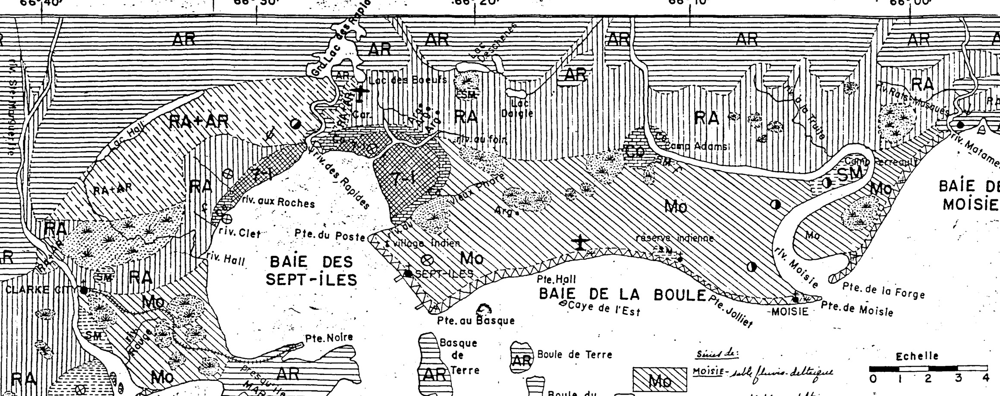

Ministère de l'Agriculture
Div. des Sols
1952 C. Laverdi
LES SOLS DE LA RÉGION DE SEPT-ÎLES
I. LE RELIEF
Faesler divise le bord de l'estuaire en 3 provinces physiographiques, auxquelles nous pourrions ajouter l'archipel des Sept-Îles: 1er) Le plateau des Laurentides, 2ème) La plaine, 3ème) Les contreforts plus souvent masqués, 4ème) L'archipel des Sept-Îles.
1er) Le Plateau
a) Se trouve à distance variable du littoral.
b) Altitude 1500 et même plus d'après White.
2ème) La Plaine
a) Plaine sablonneuse fluvio-deltaïque désespérément morne et plate.
b) Au niveau actuel de la mer, elle s'incline doucement sous la nappe aqueuse.
c) Dans le fond de la baie des Sept-Îles où se rencontre l'argile, de grandes surfaces vaseuses pavées de blocs respectables sont mises à nu par le jusant.
d) Du niveau de la mer au plateau, se superpose une série de gradins atteignant une hauteur de 400 à 420 pds: terrasses d'érosions.
3ème) Les Contreforts
a) Croupes surbaissées mais parfois assez raides qui se différencient du plateau par leur seule hauteur.
b) Étant trop hautes pour être submergés par les alluvions marines, elles laissent voir leurs dos arrondis entourés de sable grossier.
c) Au nord de la baie des Sept-Îles, entre les villages Clark City et Sept-Îles, s'approchent de la mer.
4ème) L'Archipel
a) Groupes d'îles et de cayes avec une presqu'île à l'entrée de la baie des Sept-Îles.
b) C'est une partie des contreforts en position plus avancée et surélevée: presqu'île Marcon: 736 pieds, Île Boule en Large 688 pds.
c) Il y a toujours une grande île associée à une petite.
d) Les croupes sont à peine couvertes de buissons, pendant que la forêt se cantonne dans les coulées.
II. LES COURS D'EAU
1er) La rivière Moisie
a) L'une des plus importantes de la côte nord à l'est de la région étudiée.
b) Méandre beaucoup, formant une large boucle à quelques milles de son embouchure et une autre près de la mer.
c) Charroie beaucoup de sable à magnétite, c'est au fond de la deuxième boucle que s'est développé naguère la fonderie Molson.
2ème) La Sainte-Marguerite
a) Assez grande rivière à l'ouest de la région étudiée.
b) Fournit l'énergie nécessaire pour la compagnie de pulpe de Clarke City.
c) On y construira un barrage d'environ 5 millions pour fournir l'électricité à toute la région de Sept-Îles.
d) Elle a réussi à creuser son lit jusqu'au roc sous-jacent.
e) En changeant son cour, elle a édifié la presqu'île Marcon.
3ème) Les autres Rivières
a) Les rivières Hall, Brochu, des Rapides et Matamek coupent leur lit dans les terrasses sablonneuses.
b) Les rivières au Foin et du Vieux Phare coulent sur l'argile du fond de la baie des Sept-Îles.
c) Il y a d'autres petits ruisseaux comme le ruisseau Clot.
4ème) Les lacs
- Ils sont pour ainsi dire inexistants.
- Entre la mer et la réserve indienne de Moisie, il y a au pied d'une haute terrasse un lagon.
- A l'est de Sept-Iles se trouvent une série de petits lacs parallèles se cantonnant dans des sillons prélittoraux fossiles que l'on distinguent très bien du haut des airs.
III LA ROCHE-MÈRE DES SOLS
1ér) Drift glaciaire
- On n'a trouvé aucun drift glaciaire près de la surface.
- S'il existe, il a été recouvert de sédiments marins.
- On a découvert des stries à différents endroits : Matamek, des Rapides.
2ème) Les argiles marines
- Dans toute la région, on devrait trouver cette argile à des profondeurs très variables.
- A peu de distance de la rive gauche de la rivière des Rapides, elle constitue le fond d'une gravière.
- Au ruisseau Clet, elle apparaît recouverte d'une vingtaine de pieds de sable.
- En face du Camp Adam, sur la rivière Moisie la berge de 100 pds est constituée de 75 pds d'argile.
- Le tunnel, du chemin de fer que l'on a creusé avant de traverser la rivière Moisie, a été obstrué par un éboulis d'Argile.
- Dans le fond de la baie des Sept-Iles, elle apparaît à la surface.
- De grandes quantités de coquillages ont été trouvé dans l'argile mis à nu par un éboulis au ruisseau Clet.
3ème) Les dépôts fluvio-deltaiques
- Ils furent édifiés par les rivières, après le passage des glaciers.
- L'épaisseur augmente avec l'éloignement de la falaise : baie de la Boule 100 pds de sable.
- Ce sont déposés probablement en eau douce, parce qu'on n'a pu trouver de coquillages marins.
4ème) Les limons de couverture
- Ce sont les dépôts fluviatiles, lacustres ou de ruissellement postérieurs au sable.
- Les dépôts fluviatiles se rencontrent à l'intérieur du méandre de la Moisie et le long de la Ste-Marguerite près de Clarke City et Ste-Marguerite.
- On trouve de ces limons lacustres, on petites étendues perdus ici et là dans la plaine.
5ème) Les dépôts éoliens
- Dans le canton Letellier entre la baie de la Boule et la Moisie, les sables ont été quelque peu remodelés par le vent.
- Il serait dangereux, en défrichant trop intensément que le vent reprenne son travail arrêté par la végétation.
IV LES SOLS
Du au peu de temps dont nous disposions et l'absence de chemins, nous n'avons pu faire une classification aussi détaillée que nous l'aurions voulu. Il a été possible cependant d'identifier les séries suivantes : 1er) Sables des Rapides, 2ème) Sables de Moisie, 3ème) Sable limoneux de Ste-Marguerite, 4ème) Argile des Sept-Iles, 5ème) Alluvions récentes sableuses, 6ème) Tourbières.
1er) Les sables des Rapides
- Couvre la plus grande étendue
- Sable granitique plutôt grossier.
- Associé avec beaucoup d'affleurements rocheux
- Contient un hardpan de 2 à 3 pds d'épaisseur.
- Sol pratiquement inculte.
- Analyse.
| Profondeur | pH | P2O5 | K | Ca | Mg | Al. |
|---|---|---|---|---|---|---|
| Ao 0-4" | 3.4 | 24 | 120 | 625 | 92 | 5 |
| A2 4-16" | 4.7 | 9 | 19 | 0 | 17 | 27 |
| B2-1 16-24" | 5.0 | 100 | 58 | 0 | 38 | 100 |
| B2-2 24-48" | 5.4 | 88 | 61 | 0 | 17 | 66 |
| B2-5 48-60" | 5.3 | 100 | 25 | 0 | 17 | 64 |
| C 60- | 5.7 | 140 | 36 | 0 | 0 | 37 |
2ème) Sable de Moisic
a) Sable granitique magnétique un peu plus fin que celui des Rapides.
b) Contient beaucoup de petites tourbières.
c) Fortement podzolisé contient du hardpan surtout sur le bord des terrasses et quand le sable est plus grossier.
d) Danger de poudrer, si défriché.
e) Drainage excessif, valonné, fertilité faible.
f) Analyse.
| Profondeur | pH | P2O5 | K | Ca | Mg | Al. |
|---|---|---|---|---|---|---|
| Ao 0-3" | 3.9 | 37 | 180 | 540 | 92 | 8 |
| A2 3-5" | 4.4 | 37 | 64 | 0 | 5 | 22 |
| B2-1 5-9" | 5.2 | 370 | 75 | 0 | 25 | 34 |
| B2-2 9-22" | 5.6 | 228 | 19 | 0 | 0 | 11 |
| C 22"- | 5.8 | 133 | 14 | 0 | 17 | 8 |
3ème) Sable limoneux de Ste-Marguerite
a) C'est le meilleur sol.
b) En petites étendues et dispersés en différents endroits.
c) Assez podzolisé mais ne contient pas de hardpan.
d) Analyse.
| Profondeur | pH | P2O5 | K | Ca | Mg | Al. |
|---|---|---|---|---|---|---|
| Ao 0-8" | - | - | - | - | - | - |
| A2 8-10" | 4.1 | 19 | 75 | 0 | 11 | 5 |
| B2-1 10-13" | 4.4 | 124 | 160 | 0 | 5 | 13 |
| B2-2 13-27" | 4.9 | 88. | 127 | 0 | 25 | 21 |
| C 27-30" | 4.9 | 355 | 103 | 0 | 5 | 14 |
| D 30"- Matériel fluvio-deltaïque. | ||||||
4ème) Argile des Sept-Iles
a) Ne constitue qu'une petite étendue
b) Sol mal égoutté
c) C'est un gley
d) La région est dépourvue d'eau potable.
e) Analyse.
| Profondeur | pH | P2O5 | K | Ca | Mg | Al. |
|---|---|---|---|---|---|---|
| Ao 0-36" | 4.3 | 15 | 138 | 295 | 330 | 17 |
| A2 G 36"-40" | 5.2 | 965 | 218 | 440 | 475 | 32 |
| C 40"- | 6.05 | 1810 | 468 | 400 | 630 | 14 |
5ème) Les alluvions récentes sableuses
a) Dépôts sableux actuels, b) Sable très mobile, c) D'aucuns valeur agricole, mais contient souvent magnétite.
6ème) Les tourbières
a) Constituées de turbe grossière, b) Aucune utilité agricole.
CARTE DES SOLS DE LA RÉGION DE SEPT-ÎLES

Séries de :
- Mo : MOISIE - sable fluvio-deltaïque
- RA : RAPIDES - sable fluvio-deltaïque
- RA-AR : RAPIDES - sable fluvio-deltaïque + affleurements rocheux
- SM : STE-MARGUERITE - 2 types :
sable limoneux ou limons sableux - 7-1 : SEPT-ÎLES - (argile)
- Co : complexe : Mo + Ra + 7-1 à différencier
alluvions récentes et modernes, sable de plage
Tourbière ou muskeg sur sable fl. deltaïque
affleurements rocheux
Cartographiée par : CAMILLE LAVERDIER
Henri-H. Bois, del.